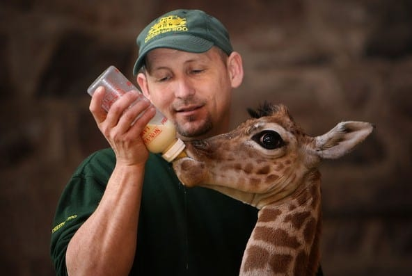
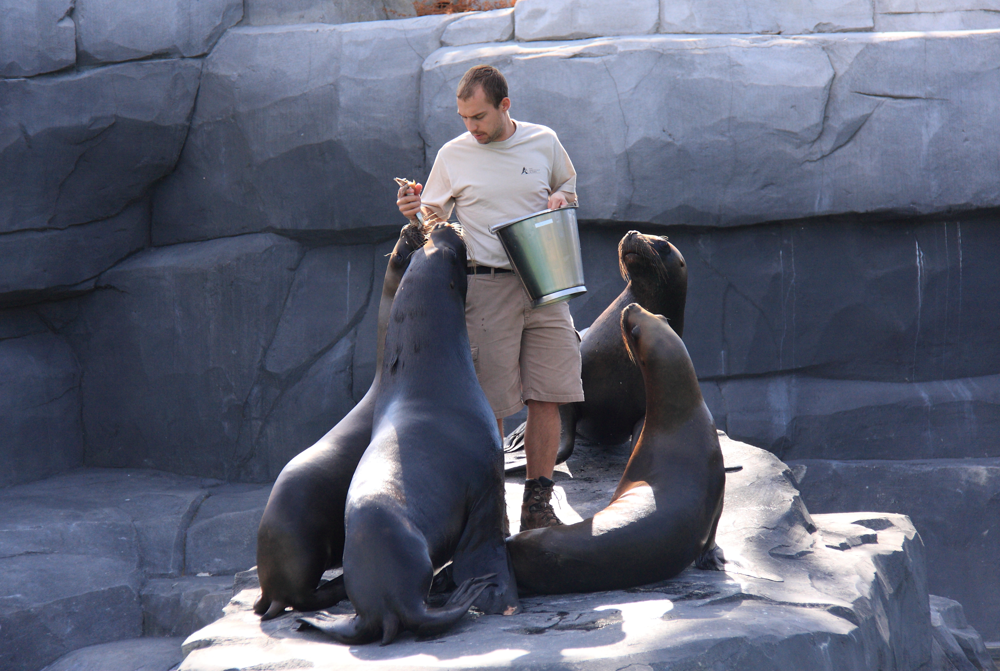
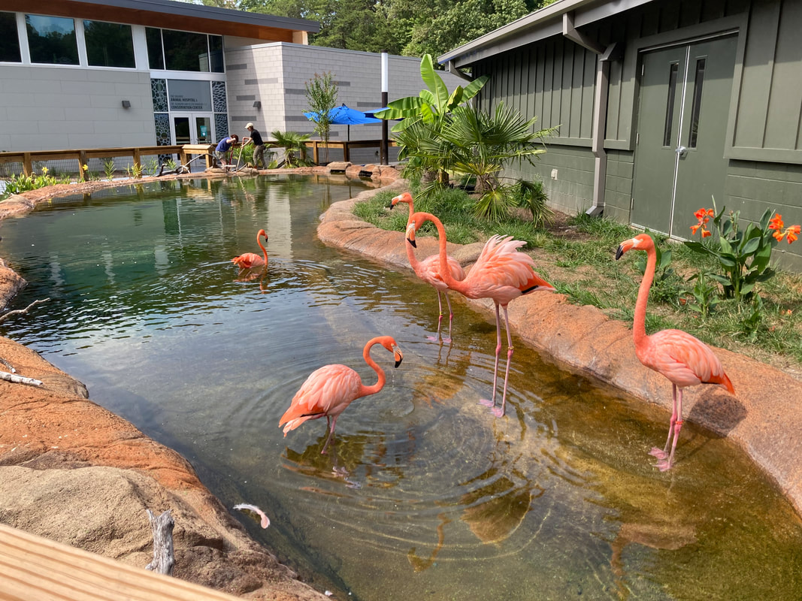

Zookeeper
A zookeeper is a person who manages zoo animals that are kept in captivity for conservation or to be displayed to the public. They are usually responsible for the feeding and daily care of the animals. As part of their routine, the zookeepers may clean the exhibits and report health problems. They may also be involved in scientific research or public education, such as conducting tours and answering questions.


Habitat Designer
A habitat specialist is a specialized type of zoologist who focuses on creating and maintaining animal living spaces. While zoologists work in various settings, habitat specialists typically work in zoos, aquariums, wildlife parks, and occasionally as consultants for private conservation lands.
